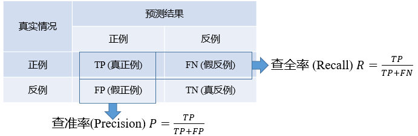

总体任务
- 给定一个数据集，如何估计一个模型的“泛化” 能力？
- 给定一个数据集，如何根据“泛化” 能力，选出最好的模型或选出最好的参数配置
概念
误差：样本真实输出与预测输出之间的差异。
训练集上的误差称为训练误差或经验误差；
测试集上的误差称为测试误差；
除了训练集外的所有样本上的误差称为泛化误差。
过拟合：学习器把训练样本学习的“太好”，将训练样本本身的特点当做所有样本的一般性质，导致泛化性能下降。
解决办法：优化目标加正则项；early stop
欠拟合：对训练样本的一般性质尚未学好。
解决办法：（决策树）拓展分支；（神经网络）增加训练轮数
模型评估方法
总体要求
- 需要一个测试集来测试学习器对新样本的判别能力
- 假设测试集是从样本真实分布中独立采样获得，以测试集上的测试误差作为泛化误差的近似
- 测试样本尽量不在训练集中出现、未在训练集中使用过
留出法（hold out）
方法：
- 直接将数据集 D 划分为两个互斥的集合 S,T
- 在 S 上训练出模型后用 T 来评估其测试误差并作为泛化误差的估计
- 若干次随机划分、重复进行实验评估后取平均值作为评估结果
注意：
- 分层采样，保证 S,T 的数据分布一致
- 对偏差-方差的窘境，做法是用 \frac{2}{3}\sim\frac{4}{5} 的数据集用于训练
交叉验证（cross validation）
方法：
- 将数据集分层采样划分为 k 个大小相似的互斥子集
- 每次用 k-1 个子集的并集作为训练集，余下的子集作为测试集
- 最终返回 k 个测试结果的均值
注意：
- 根据 k 的取值，称之为 k\text{-fold} 交叉验证
- 为了排除数据划分引入的差别，k 折交叉验证通常随机使用不同的划分重复 p 次，最终的评估结果取所有结果的均值（如10次10折交叉验证就是做了100次“训练-测试”）
- k 值大小的权衡实际上是数据划分因素与计算复杂度之间的权衡
留一法（Leave-One-Out, LOO）：
- 每个样本一个集合（k=\text{size}）
- 不受随机样本划分方式的影响，结果往往比较准确
- 当数据集比较大时，计算开销难以忍受
自助法（bootstrapping）
前面两种方法的问题：希望评估 D 训练出的模型，但是实际评估模型使用了更小数据集，对保真性造成了影响
方法：
- 从 D 中做 \text{size}(D) 次有放回抽样，得 D'
- 将 D' 用作训练集，用 D-D' 作测试集
注意：
- 实际模型与预期模型都使用 \text{size}(D) 个训练样本
- 约有1/3（极限1/e）的样本没在训练集中出现
- 自助法在数据集较小、难以有效划分训练/测试集时很有用
- 由于改变了数据集分布可能引入估计偏差，在数据量足够时，留出法和交叉验证法更常用
从初始数据集中产生多个不同的训练集，对集成学习有很大的好处。
集成学习：一种技术框架，其按照不同的思路来组合基础模型，从而达到更好的目的。
模型评估的性能度量
给定样例集 D=\{(\mathbf{x}_1,y_1),...,(\mathbf{x}_m,y_m)\}，性能度量函数 F 需要比较预测结果 f(x) 和真实标记
均方误差
回归任务最常用的性能度量 $$ F=\mathbb{E}(f,D)=\frac{1}{m}\sum_i[f(\mathbf{x}_i)-y_i]^2 $$ 假设知道数据的分布，那么均方误差表达为 $$ F=\mathbb{E}(f,D)=\int_D[f(\mathbf{x})-y]^2p(\mathbf{x})d\mathbf{x} $$
错误率和精度
错误率：分错类的样本占样本总数的比例 $$ F=\mathbb{E}(f,D)=\frac{1}{m}\sum_i\mathbb{I}[f(x_i)\ne y_i] $$ 精度：分对样本占样本总数的比率 $$ \text{acc}(f,D)=1-\mathbb{E}(f,D) $$
混淆矩阵

真正例TP：判断为正例（P），判断是正确的（T），实际是正例
真反例TN：判断为负例（N），判断是正确的（T），实际就是负例
假正例FP：判断为正例（P），判断是错误的（T），实际是负例
假反例FN：判断为负例（N），判断是错误的（T），实际是正例
查准率（P, 精度）：判断为正例中，真正是正例的比例 $$ P=\frac{TP}{TP+FP} $$ 查全率（R, 召回率）：判断为正例的，占真正正例的比例 $$ R=\frac{TP}{TP+FN} $$ 注意：
-
查准率和查全率是一堆矛盾的度量
-
根据学习器的预测结果按正例可能性大小对样例进行排序，并逐个把样本作为正例进行预测，每次可以计算出当前 P 和 R，遍历之后可以得到 P-R 曲线
-
如果一个学习器的 P-R 曲线被另一个学习器的曲线完全包住，那么后者性能更优
-
如果发生了交叉，则难以判断孰优孰劣。
- 通过平衡点来权衡这两者指标
平衡点是曲线上“查准率=查全率”时的取值，可用来用于度量 P-R 曲线有交叉的分类器性能高低。
通过 F1 度量来评估学习器优劣 $$ F1=\frac{2PR}{P+R}=\left[\frac{1}{2}\left(\frac{1}{P}+\frac{1}{R}\right)\right]^{-1} $$
更一般的形式是 F_\beta $$ F_\beta=\frac{\left(1+\beta^2\right) \times P \times R}{\beta^2 P+R}=\frac{\frac{1}{\beta}+\beta}{\left(\frac{1}{\beta} \frac{1}{P}+\beta \frac{1}{R}\right)} $$ \beta >1 时偏重查全率，\beta < 1 时偏重查准率。
多个混淆矩阵的情况：
- 宏：先在各个混淆矩阵上分别计算出查准率和查全率等指标，再求平均。
- 微：先在各个混淆矩阵对应元素平均，得到TP、FP、TN、FN的平均值，在基于平均值计算查准率等指标。
受试者工作特征（Receiver Operating Characteristics）
真正例率TPR：在所有真实正例当中，正确判断为正例的占的比例，实际就是精度 $$ TPR=\frac{TP}{TP+FN} $$ 假正例率FPR：在所有真实负例当中， 错误判断为正例所占的比例 $$ FPR=\frac{FP}{FP+TN} $$ 绘制ROC的方法：
- 有 m^+ 个正例、m^- 个负例，根据学习器预测结果 f(x) 排序。
- 将分类阈值设为每个样例的预测值
- 若当前为真正例，则向 y 轴步进 1/m^+；若当前为假正例，则向 x 轴步进 1/m^-
注意：
- 若某个学习器的ROC曲线被另一个学习器的曲线“包住”，则后者性能优于前者
- 如果曲线交叉，可以根据ROC曲线下面积大小进行比较，也即AUC值（Area Under Curve）
- AUC衡量了样本预测的排序质量
代价曲线
现实任务中不同类型的错误所造成的后果很可能不同，为了权衡不同类型错误所造成的不同损失，可为错误赋予“非均等代价”。

平均代价（性能度量指标）：
在非均等代价下，ROC曲线不能直接反映出学习器的期望总体代价，而“代价曲线”可以。
具体怎么做，我猜不考，就不学了吧：）
模型评估的比较方法
做性能比较要考虑的事情：
- 测试性能（测试集上表现的）并不等于泛化性能
- 测试性能随着测试集的变化而变化
- 很多机器学习算法本身有一定的随机性
所以直接选取相应评估方法在相应度量下比大小的方法不可取。——假设检验！
二项检验
t 检验
多次留出法或交叉验证法进行训练/测试时可使用 t 检验。
交叉验证 t 检验（成对）
McNemar 检验
Friedman 检验
Nemenyi 后续检验
泛化性能解释
假设噪声的期望为 0，即 \mathbb{E}_D(y_D-y)=0。
对泛化误差分解： $$ \begin{aligned} E(f, D) &=\mathbb{E}_D\left[\left(f(\boldsymbol{x} ; D)-y_D\right)^2\right] \newline &=\mathbb{E}_D\left[\left(f(\boldsymbol{x} ; D)-\bar{f}(\boldsymbol{x})+\bar{f}(\boldsymbol{x})-y_D\right)^2\right] \newline &=\mathbb{E}_D\left[(f(\boldsymbol{x} ; D)-\bar{f}(\boldsymbol{x}))^2\right]+\mathbb{E}_D\left[\left(\bar{f}(\boldsymbol{x})-y_D\right)^2\right] \newline &=\mathbb{E}_D\left[(f(\boldsymbol{x} ; D)-\bar{f}(\boldsymbol{x}))^2\right]+\mathbb{E}_D\left[\left(\bar{f}(\boldsymbol{x})-y+y-y_D\right)^2\right] \newline &=\mathbb{E}_D\left[(f(\boldsymbol{x} ; D)-\bar{f}(\boldsymbol{x}))^2\right]+\mathbb{E}_D\left[(\bar{f}(\boldsymbol{x})-y)^2\right]+\mathbb{E}_D\left[\left(y-y_D\right)^2\right] \newline &=\text{Var}(\boldsymbol{x})+\text{bias}(\boldsymbol{x})+\varepsilon^2 \end{aligned} $$
- 方差度量了同样大小训练集的变动所导致的学习性能的变化；即刻画了数据扰动所造成的影响
- 偏差度量了学习算法期望预测与真实结果的偏离程度；即刻画了学习算法本身的拟合能力
- 噪声表达了在当前任务上任何学习算法所能达到的期望泛化误差的下界；即刻画了学习问题本身的难度
泛化性能是由学习算法的能力、数据的充分性以及学习任务本身的难度所共同决定的。给定学习任务为了取得好的泛化性能，需要使偏差小（充分拟合数据）而且方差较小（减少数据扰动产生的影响）。
一般来说，偏差与方差是有冲突的，称为偏差-方差窘境。
-
在训练不足时，学习器拟合能力不强，训练数据的扰动不足以使学习器的拟合能力产生显著变化，此时偏差主导泛化错误率
-
随着训练程度加深，学习器拟合能力逐渐增强，方差逐渐主导泛化错误率
-
训练充足后，学习器的拟合能力非常强，训练数据的轻微扰动都会导致学习器的显著变化，若训练数据自身非全局特性被学到则会发生过拟合。